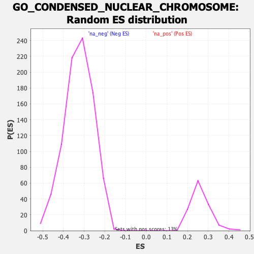

| | | Dataset | DE_genes2 |
| Phenotype | NoPhenotypeAvailable |
| Upregulated in class | na_neg |
| GeneSet | GO_CONDENSED_NUCLEAR_CHROMOSOME |
| Enrichment Score (ES) | -0.69143116 |
| Normalized Enrichment Score (NES) | -2.119616 |
| Nominal p-value | 0.0 |
| FDR q-value | 0.0 |
| FWER p-Value | 0.0 |
Table: GSEA Results Summary
Fig 1: Enrichment plot: GO_CONDENSED_NUCLEAR_CHROMOSOME
Profile of the Running ES Score & Positions of GeneSet Members on the Rank Ordered List
| PROBE | GENE SYMBOL | GENE_TITLE | RANK IN GENE LIST | RANK METRIC SCORE | RUNNING ES | CORE ENRICHMENT | | 1 | CHMP1A | | | 654 | 3.296 | -0.0254 | No |
| 2 | SYCE3 | | | 952 | 2.793 | -0.0313 | No |
| 3 | SYCE1L | | | 1786 | 1.927 | -0.0735 | No |
| 4 | RAD9A | | | 2085 | 1.693 | -0.0843 | No |
| 5 | SUN2 | | | 2433 | 1.473 | -0.0989 | No |
| 6 | RGS12 | | | 3836 | 0.884 | -0.1803 | No |
| 7 | RSPH1 | | | 4377 | 0.727 | -0.2099 | No |
| 8 | RNF212 | | | 4522 | 0.687 | -0.2157 | No |
| 9 | P3H4 | | | 4647 | 0.650 | -0.2204 | No |
| 10 | KIFAP3 | | | 4657 | 0.648 | -0.2181 | No |
| 11 | AURKC | | | 5270 | 0.499 | -0.2531 | No |
| 12 | SYCE2 | | | 5414 | 0.467 | -0.2598 | No |
| 13 | PMF1 | | | 5580 | 0.431 | -0.2679 | No |
| 14 | RNF212B | | | 7440 | 0.075 | -0.3806 | No |
| 15 | ADD3 | | | 7464 | 0.072 | -0.3817 | No |
| 16 | STAG3 | | | 7725 | 0.029 | -0.3973 | No |
| 17 | REC8 | | | 7773 | 0.021 | -0.4001 | No |
| 18 | HSPA2 | | | 7779 | 0.021 | -0.4003 | No |
| 19 | UBE2I | | | 7911 | 0.003 | -0.4083 | No |
| 20 | TUBG1 | | | 7955 | -0.003 | -0.4109 | No |
| 21 | CENPB | | | 8197 | -0.041 | -0.4253 | No |
| 22 | RAD9B | | | 8397 | -0.076 | -0.4371 | No |
| 23 | SYN1 | | | 8990 | -0.191 | -0.4722 | No |
| 24 | SS18L1 | | | 9378 | -0.284 | -0.4945 | No |
| 25 | SYCP2 | | | 9779 | -0.393 | -0.5171 | No |
| 26 | SYCP3 | | | 9898 | -0.427 | -0.5224 | No |
| 27 | C14orf39 | | | 10332 | -0.562 | -0.5463 | No |
| 28 | BRD4 | | | 10448 | -0.602 | -0.5506 | No |
| 29 | CCNB1IP1 | | | 10929 | -0.775 | -0.5764 | No |
| 30 | NOL6 | | | 10979 | -0.794 | -0.5760 | No |
| 31 | RAD1 | | | 11169 | -0.868 | -0.5837 | No |
| 32 | TTN | | | 11813 | -1.138 | -0.6178 | No |
| 33 | HUS1 | | | 12299 | -1.374 | -0.6413 | No |
| 34 | RCC1 | | | 12313 | -1.379 | -0.6361 | No |
| 35 | SUV39H1 | | | 13225 | -1.906 | -0.6831 | Yes |
| 36 | SMC1A | | | 13325 | -1.971 | -0.6806 | Yes |
| 37 | SYCP2L | | | 13346 | -1.986 | -0.6731 | Yes |
| 38 | CENPO | | | 13365 | -2.007 | -0.6655 | Yes |
| 39 | MLH1 | | | 13750 | -2.282 | -0.6789 | Yes |
| 40 | NCAPD2 | | | 13788 | -2.321 | -0.6711 | Yes |
| 41 | DSN1 | | | 13907 | -2.424 | -0.6677 | Yes |
| 42 | INCENP | | | 13962 | -2.468 | -0.6602 | Yes |
| 43 | NEK2 | | | 14051 | -2.552 | -0.6545 | Yes |
| 44 | NCAPD3 | | | 14122 | -2.615 | -0.6473 | Yes |
| 45 | DMC1 | | | 14196 | -2.689 | -0.6401 | Yes |
| 46 | RRS1 | | | 14305 | -2.785 | -0.6345 | Yes |
| 47 | AGO3 | | | 14492 | -2.982 | -0.6328 | Yes |
| 48 | MIS12 | | | 14669 | -3.210 | -0.6296 | Yes |
| 49 | RAD51 | | | 15283 | -4.088 | -0.6490 | Yes |
| 50 | HORMAD1 | | | 15302 | -4.116 | -0.6322 | Yes |
| 51 | NIFK | | | 15308 | -4.126 | -0.6145 | Yes |
| 52 | MLH3 | | | 15568 | -4.628 | -0.6101 | Yes |
| 53 | ATRX | | | 15599 | -4.719 | -0.5914 | Yes |
| 54 | AURKA | | | 15607 | -4.737 | -0.5712 | Yes |
| 55 | PLK1 | | | 15623 | -4.763 | -0.5514 | Yes |
| 56 | CCNB1 | | | 15643 | -4.796 | -0.5317 | Yes |
| 57 | CENPC | | | 15651 | -4.807 | -0.5112 | Yes |
| 58 | BLM | | | 15728 | -4.957 | -0.4943 | Yes |
| 59 | NCAPH | | | 15843 | -5.247 | -0.4784 | Yes |
| 60 | TOPBP1 | | | 15880 | -5.334 | -0.4573 | Yes |
| 61 | RAD21 | | | 15930 | -5.459 | -0.4365 | Yes |
| 62 | CHEK1 | | | 15965 | -5.552 | -0.4145 | Yes |
| 63 | AURKB | | | 16120 | -6.007 | -0.3977 | Yes |
| 64 | BUB1 | | | 16142 | -6.084 | -0.3725 | Yes |
| 65 | LRPPRC | | | 16207 | -6.354 | -0.3487 | Yes |
| 66 | MIS18BP1 | | | 16234 | -6.494 | -0.3220 | Yes |
| 67 | BUB1B | | | 16335 | -7.102 | -0.2972 | Yes |
| 68 | NUF2 | | | 16382 | -7.475 | -0.2675 | Yes |
| 69 | RAD50 | | | 16404 | -7.792 | -0.2348 | Yes |
| 70 | BRCA1 | | | 16413 | -7.892 | -0.2010 | Yes |
| 71 | CENPA | | | 16438 | -8.139 | -0.1670 | Yes |
| 72 | SMC3 | | | 16453 | -8.381 | -0.1314 | Yes |
| 73 | CENPK | | | 16485 | -9.298 | -0.0928 | Yes |
| 74 | BRCA2 | | | 16493 | -9.707 | -0.0510 | Yes |
| 75 | NDC80 | | | 16527 | -12.233 | 0.0002 | Yes |
Table: GSEA details [plain text format]

Fig 2: GO_CONDENSED_NUCLEAR_CHROMOSOME: Random ES distribution
Gene set null distribution of ES for GO_CONDENSED_NUCLEAR_CHROMOSOME